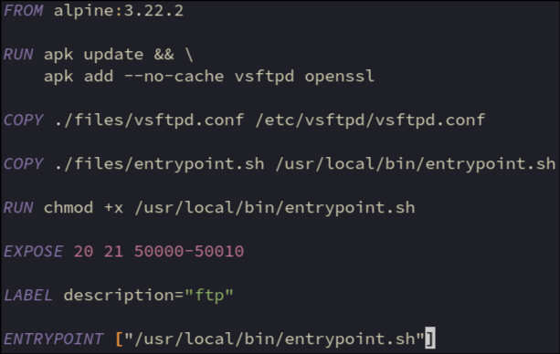

Install ftp server and openssl to generate ssl certificates
Add ftp server config and entrypoint script to container
20 = file transfers in active mode
21 = commands
50000-50010 = ports range for transfers in passive mode
Run entrypoint script when container starts